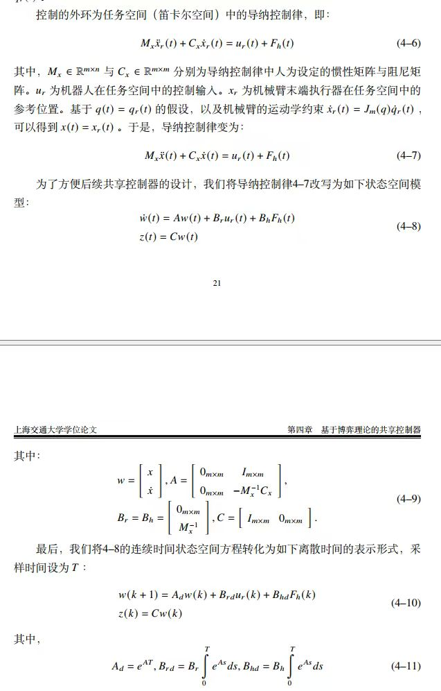

1. 内环是什么
开头的问题是：仿真环境提供的内环速度控制到底怎么实现。
“仿真环境提供的内环速度控制是怎么实现的呀？”
“因为最后控制的都是力矩，所以重力补偿应该在速度环被补偿过了。”
“现在是直接给底层传的速度。”
含义：他们在区分“控制接口看起来是速度”与“物理仿真最后一定由力/力矩驱动”。
面向新加入 PR2-Sim-Pure 项目的同学：这份页面把群聊原话、图中导纳控制公式、
以及当前 feat 分支的 pr2_mujoco_bridge 实现放在同一张解释图里。
大家在确认“外环算速度参考”与“仿真最终执行力矩”之间是不是有缺口。
臂端并不是把关节速度直接写入 MuJoCo 速度执行器，而是先算
qdot 参考，再转成带 qfrc_bias 补偿的
effort torque。
不要把当前 force_tracking 说成完整二阶导纳模型；它是第一阶段的
force -> reference velocity -> reference position 简化实现。
开头的问题是：仿真环境提供的内环速度控制到底怎么实现。
“仿真环境提供的内环速度控制是怎么实现的呀？”
“因为最后控制的都是力矩，所以重力补偿应该在速度环被补偿过了。”
“现在是直接给底层传的速度。”
含义：他们在区分“控制接口看起来是速度”与“物理仿真最后一定由力/力矩驱动”。
中间大家讨论是否要把分支改成 torque control。
“之前是给底层传力矩，然后后面改成速度的。”
“我们现在应该加上力矩控制嘛？”
“不用哒，我们做实物也用不上力矩。”
含义：实物平台通常给上层的是速度/位置接口；但仿真里如果速度环太理想，会掩盖重力和跟踪误差。
他们把外环导纳重新解释为虚拟质量阻尼系统。
“实际上，外环导纳控制就是一个虚拟的质量阻尼系统。”
“F = M_d x_ddot_d + D_d x_dot_d。”
“然后你算出来 x_dot_d，通过雅可比转换成关节速度 q_dot_d。”
含义：外力不是直接等于关节命令，而是先驱动一个任务空间参考运动。
对比曲线时，实际位置信息来自关节状态再做正运动学。
“一个是根据这个微分方程，纯数值模拟出来的。”
“一个是用这种方法控制机器人，在同样时刻读取从传感器传来的位置信息。”
“读关节角度然后用算逆运动学得到的位置信息嘛？”
“正运动学。”
含义：已知关节角求末端位姿是 forward kinematics，不是 inverse kinematics。
最后他们定位到：如果速度内环只是纯反馈，重力会导致稳态误差。
“找到原因了，内环不是完美的速度跟踪，是纯 P 控制，所以对重力有稳态误差。”
“所以实际上内环还是计算的力矩对吗？”
“是的，是发给内环一个速度，然后它自己最后还是转换成力矩。”
“如果要用动力学，M、C、g 这些函数有给吗？有的话，咱自己简单搓一个内环带补偿的。”
含义：理想速度环、纯 P 速度环、带动力学补偿的 torque loop 会产生完全不同的仿真表现。
截图里的第 4 章公式把任务空间导纳写成状态空间模型。直观讲：
外界力 F_h 进入一个虚拟质量、阻尼系统，系统输出末端参考状态
w = [x, x_dot]，再离散化成每个采样周期更新一次的
w(k+1)。
图里讨论的是“参考运动怎么生成”；它不直接回答底层执行器是速度、位置还是力矩。 底层执行器属于另一层问题。
当前 force_tracking 模式没有完整维护二阶
M-D 状态空间，而是把力映射成受限参考速度，再积分出参考位置。

w 以及离散化形式。
当前 feat 分支里，臂端 force-tracking 的执行链可以按下面读：
force injector 发布末端外力。
滤波、死区、限速、积分得到动态 reference。
reference velocity 加位置误差跟踪项。
DLS Jacobian 把末端速度转为关节速度参考。
用 qfrc_bias 和质量矩阵生成 effort。
bridge 把 effort 写入 torque motor。
| 对象 | 它在说什么 | 当前分支里的对应关系 | 容易误解的点 |
|---|---|---|---|
| 图中二阶导纳模型 | F = M_d x_ddot + D_d x_dot，状态是 [x, x_dot]。 |
fixed_equilibrium 的 AdmittanceState.step 更接近这个思路，还额外有 stiffness。 |
它是 reference dynamics，不是执行器内环。 |
当前 force_tracking |
力经过滤波和死区后直接生成 reference velocity，再积分成 reference position。 | ForceTrackingReferenceState.step：force_to_velocity_gain、max_velocity、max_displacement。 |
它更像一阶 reference generator，不应声称完整复现图中 4-10。 |
| 臂端执行层 | 外环得到 ee_vel_cmd，Jacobian 求 qdot。 |
随后用 qfrc_bias + M_arm * PD 生成 torque effort。 |
“算速度”不等于“直接给 MuJoCo 速度执行器”。 |
| 底盘执行层 | base admittance 输出 Twist。 |
bridge 把 cmd_vel 映射到底盘转向和轮速执行器。 |
底盘和臂的执行接口不同，不要混成同一个内环。 |
ForceTrackingReferenceState.step 在第 173-211 行附近完成：
force filter、deadband、force_to_velocity_gain、velocity clamp、
position integration。
AdmittanceState.step 在第 242-253 行附近计算
accel = (force - damping * velocity - stiffness * displacement) / mass。
第 404-409 行附近计算 Jacobian；第 496-512 行附近求 qdot_target；
第 514-522 行附近生成 tau。
第 411 行附近读取 qfrc_bias，第 521 行附近用
tau_bias + m_arm @ (...)，所以不是纯 P 速度内环。
文件头和第 363-390 行附近说明：position 写位置执行器，
velocity 写速度执行器，effort 写 torque motor。
第 240-278 行附近同样先更新 reference，再发布 Twist，
后续由 bridge 映射到底盘轮速/转向。
因为速度参考只是外环希望机器人怎么动。真实动力学仿真里，关节不会凭空获得速度，
MuJoCo 最后要通过执行器控制量改变系统状态。当前臂端路径把 qdot
参考转换成 compensated torque。
机械臂受重力影响。若内环只根据速度误差输出力矩，qdot_des = 0
时不一定能提供维持姿态所需的重力补偿力矩，所以可能出现稳态误差或下垂。
如果传感器读到的是关节角，再算末端位置，那是正运动学 FK。 逆运动学 IK 是反过来：已知末端目标位置，求关节角。
不能直接这么说。当前 force_tracking 是工程化的第一阶段动态参考，
不是完整状态空间离散导纳。可以说它实现了 force-driven bounded reference tracking。
臂端 torque 路径读取了 MuJoCo qfrc_bias，这个量包含重力和速度相关偏置。
这比聊天里担心的“纯 P 速度环”更强，但它仍然是仿真侧实现，不等于真实 PR2 硬件接口。
可以把 force_tracking reference generator 改成显式维护
[x, x_dot] 的二阶离散导纳状态，并用 CSV 同时对比理论状态和实测 FK 位姿。